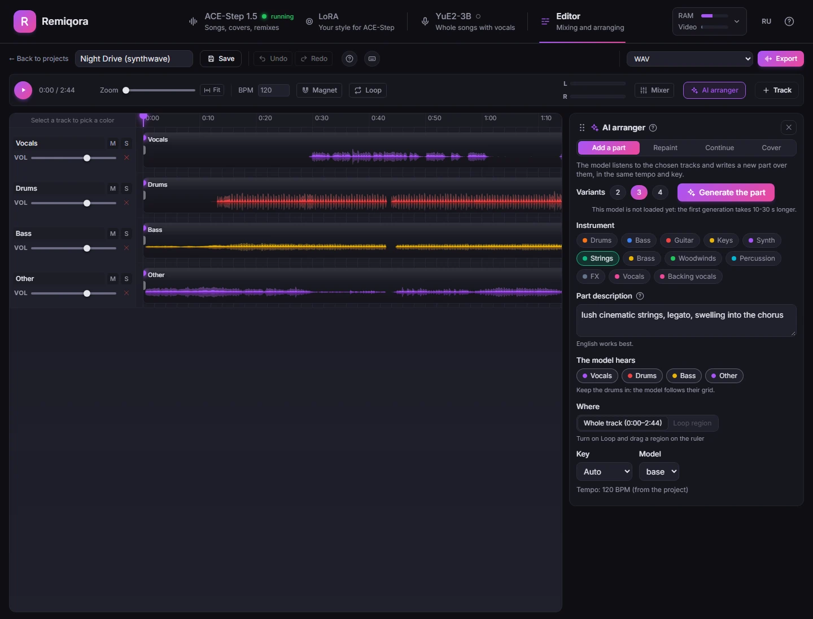
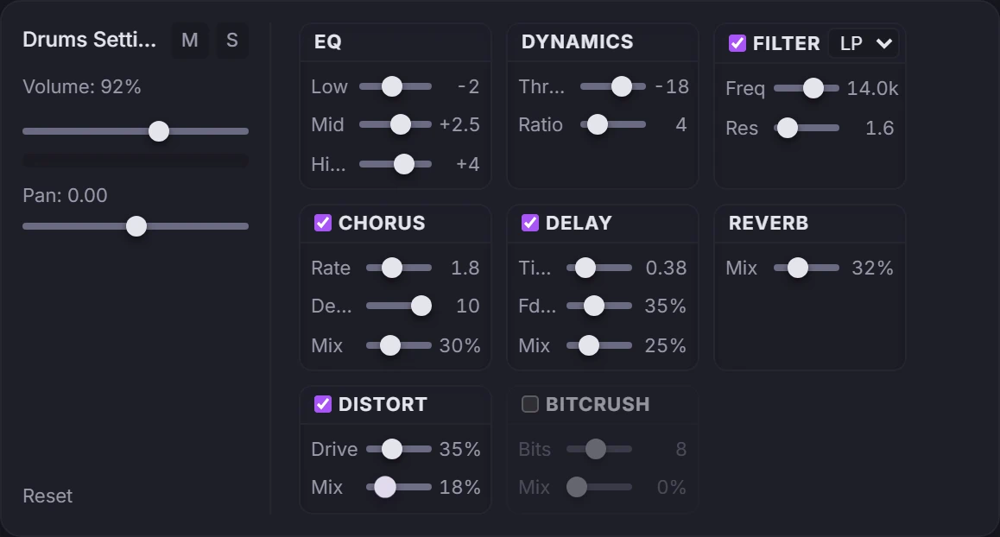
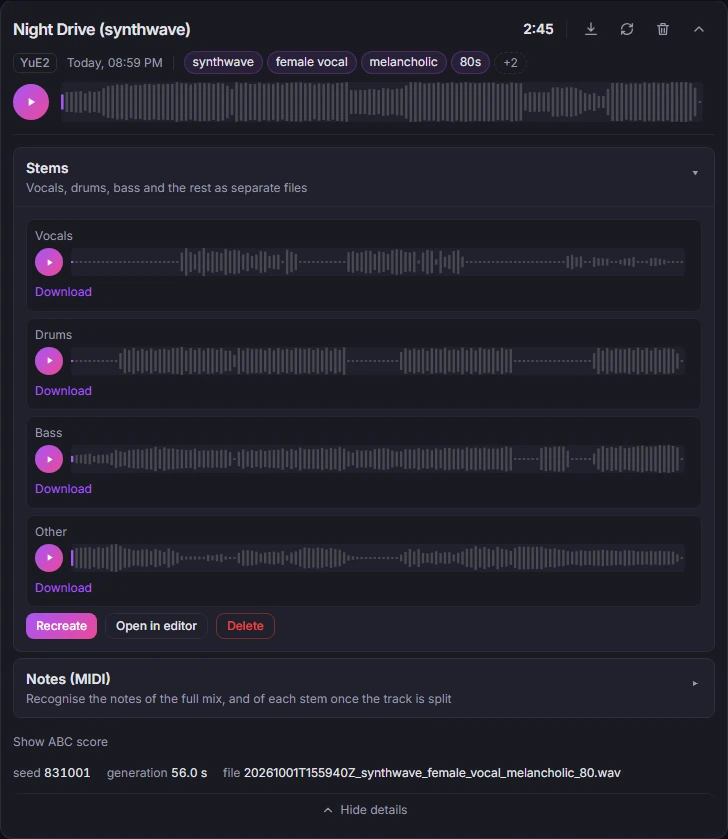
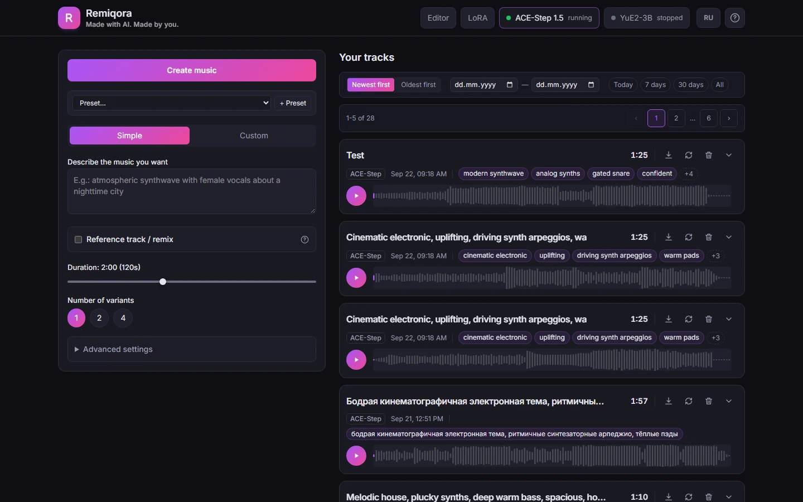
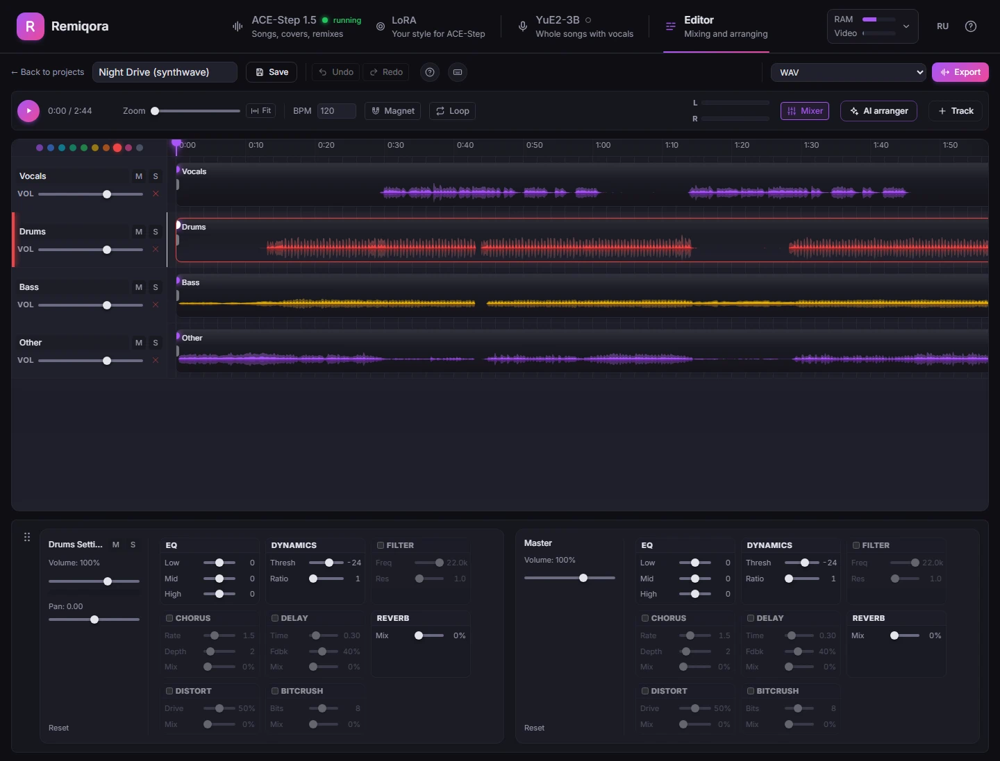
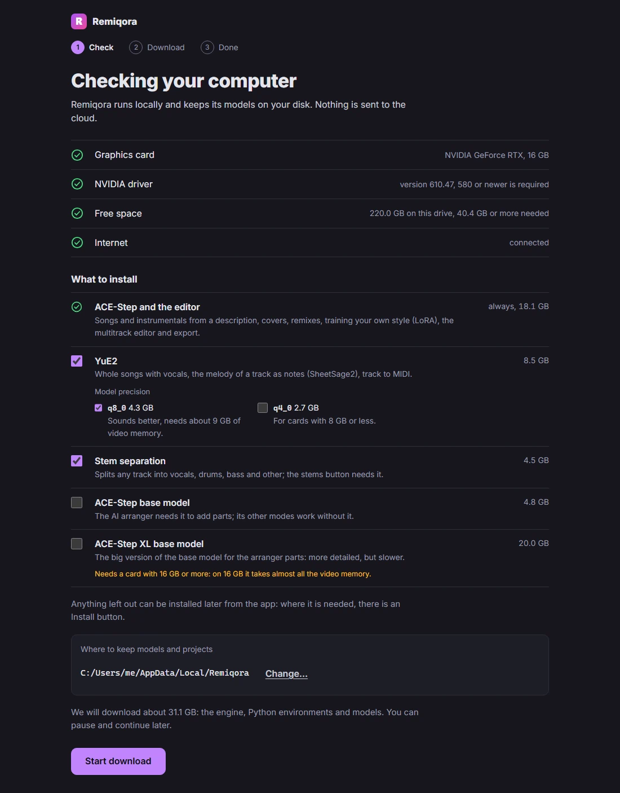
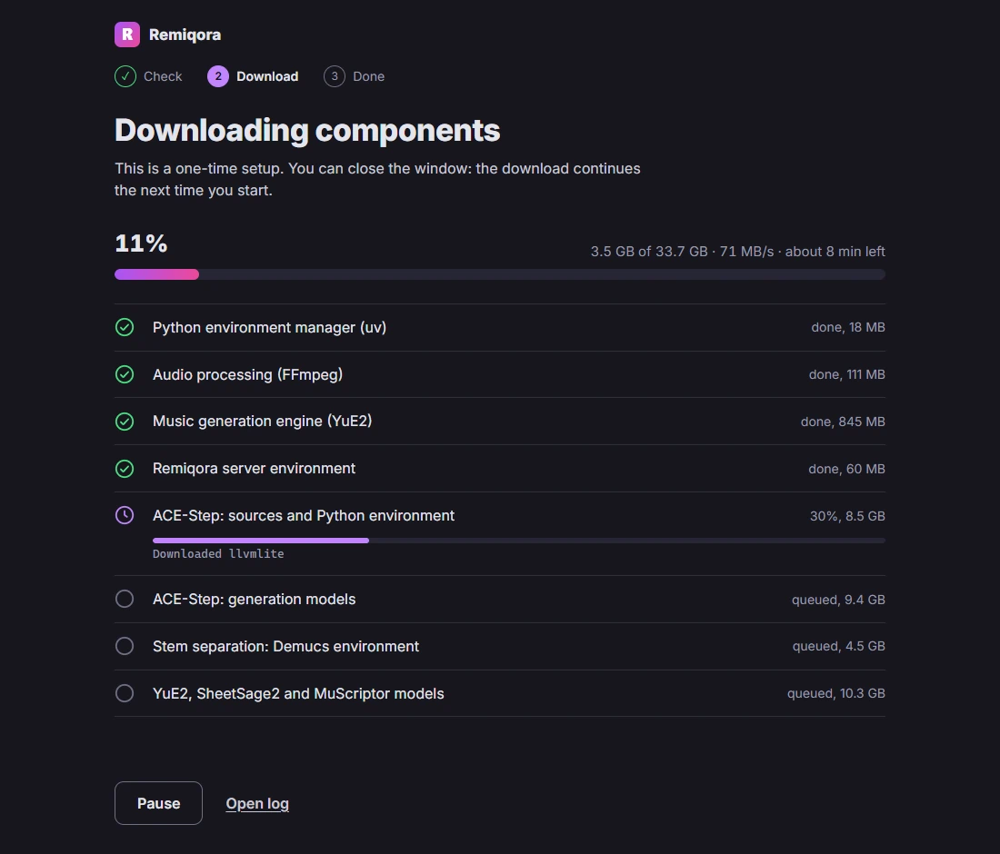

- Open source · Runs locally
- New: AI arranger
- Windows · NVIDIA CUDA
- macOS · Apple Silicon
Remiqora. Made with AI.
Made by you.
Remiqora is a local music studio. ACE-Step 1.5 and YuE2-3B generate the track, Demucs splits it into stems, the AI arranger writes new parts that fit, and a multitrack editor in your browser mixes it down. Everything runs on your own computer.
Get it on GitHubWatch the demo
- Generate
- Stems
- AI arranger
- Mix



Listen to a song come together
Everything here was made in Remiqora for this page. ACE-Step 1.5 wrote the song from one prompt, Demucs split it into four stems, and the AI arranger wrote three string parts over them. Press play, mute or solo the stems, and switch the strings on while it plays.
- The song
energetic pop rock, powerful female vocal, punchy live drums, driving bass, crunchy electric guitars, anthemic chorus, 128 bpm, no strings
ACE-Step 1.5 turbo made three 1:40 variants in about 15 seconds once the model was loaded. One of them plays here, untouched.
- The strings
driving staccato string section, rhythmic violins and cellos, energetic, building into the chorus
The AI arranger heard the whole mix and wrote three takes in about 40 seconds on the base model. They play 6 dB down, as you would pull the fader.
Times on an RTX 4080 with 16 GB. The lyrics were written for this demo; the Russian page has its own song with the same prompt.
Four prompts, four songs
The first variant of each prompt as ACE-Step 1.5 turbo gave it: no editing, no mixing. Each run made two one-minute variants in about 10 seconds on an RTX 4080. Here are 30 seconds of each.
deep house, rolling bassline, warm analog pads, crisp hi-hats, four on the floor, 122 bpm
Instrumental, 0:30
lo-fi hip hop, dusty boom bap drums, mellow Rhodes chords, vinyl crackle, upright bass, 80 bpm
Instrumental, 0:30
cinematic orchestral, soaring strings, french horns, taiko and timpani, epic build
Instrumental, 0:30
russian indie rock, male vocal, jangly electric guitars, driving drums, bass, energetic
With Russian lyrics, 0:30
From prompt to mixdown
Generate
Describe the music, or bring a style and lyrics. ACE-Step 1.5 and YuE2-3B share one interface: pick a model in the header and Remiqora starts it and stops the other, so a single GPU is enough.

The generation form and your track library Split into stems
One click separates any track into vocals, drums, bass and the rest with Demucs. Open in editor sends all four into a new project.
Four stems, each with its own player and download Add parts with the AI arranger
Pick an instrument and the lanes the model should hear: it writes drums, bass, strings or vocals in their tempo and key. It can also repaint a section, continue the track or cover it in another style. Every run gives 2 to 4 variants, each on its own lane, so you keep the best one.
The AI arranger docked next to a four-stem project Mix in the editor
Trim, split and fade clips, loop a section, snap to a BPM grid, and time-stretch a clip to the project tempo without changing its pitch.

The timeline with four stem lanes, the drums lane selected Export
Render the mix as WAV or MP3 in the browser and it is saved back to your library, or export every lane with a Reaper project or a DAWproject file to finish in your own DAW.
A full effects rack on every channel
Every track and the master bus carry the same eight effects, all running in real time: EQ, compressor, filter, chorus, delay, reverb, distortion and bitcrusher.
Also in the box
- LoRA training for ACE-Step, right in the interface
- Melody extraction with SheetSage2 and audio-to-MIDI with MuScriptor
- Undo and redo for 30 steps, and a detailed built-in guide for every section
- Interface in English and Russian, in your system language by default
Or use it as a desktop app
On Windows and on Macs with Apple Silicon, Remiqora also comes as an installer. It opens in its own window and sets everything up on the first launch: no Git, no Python, no compiler.
Download for WindowsDownload for macOS
Version 0.3.0, pre-release. Windows: NVIDIA GPU. macOS: Apple Silicon. See all files and SHA-256 sums.
- It checks your GPU, driver and free space and asks what to install: ACE-Step always (about 18 GB), YuE2, stem separation and the AI arranger models as options, each with its size.
- Anything left out shows up as not installed, with a button that adds it later while the app keeps running.
- Closing the window stops the model servers and frees the GPU.
- Models, projects and logs stay in that folder. Nothing is uploaded anywhere.
Built with Electron around the same web interface. The first launch uses uv for Python, the prebuilt audio.cpp engine (CUDA or Metal) and FFmpeg.
Experimental. The installers are not signed yet, so Windows shows a SmartScreen warning and macOS may ask you to allow the app. Prefer to build it yourself? The steps are in the desktop folder.


What to know before you install
Works today
- Windows with an NVIDIA CUDA GPU. Tested on an RTX 4080 with 16 GB.
- macOS on Apple Silicon. Tested on an M5 with 24 GB; newer and slower than the Windows path.
- Linux x86_64 with an NVIDIA GPU, via community-contributed scripts.
- Stem separation, MIDI transcription and the editor.
Limits
- No desktop installer for Linux yet — run from source via the scripts.
- ACE-Step and YuE2 run one at a time by default.
- Output quality is whatever the models give you.
- The desktop installers are experimental and unsigned.
- In active development: releases are pre-releases for now.
- Licenses: Remiqora and ACE-Step 1.5 are MIT, but the YuE2-3B weights are CC BY-NC 4.0, so no commercial use.
Install
With the scripts you need Git and they install the rest; every option and troubleshooting step is in the README. Prefer no terminal? Use the desktop app above.
Windows with an NVIDIA GPU
git clone https://github.com/inikolax/remiqora.git
cd remiqora
setup_prereqs.bat
setup_models.bat
dev.batInstall the NVIDIA driver yourself: the script leaves it alone. Model downloads are about 10 GB.
macOS with Apple Silicon
git clone https://github.com/inikolax/remiqora.git
cd remiqora
./setup_prereqs.sh
./setup_models.sh
./dev.shUses a prebuilt Metal build of YuE2, so no compiler is needed.
Linux x86_64 with an NVIDIA GPU
git clone https://github.com/inikolax/remiqora.git
cd remiqora
./setup_linux.sh
./prod_run_linux.shCommunity-contributed. Builds audio.cpp from source, so you'll need a CUDA toolkit (nvcc, cuBLAS, cuFFT) besides the driver. Verified on Ubuntu 24.04.
Questions people ask
Is Remiqora free?
Yes. It is open source under the MIT license, with no account, no subscription and no limit on how many tracks you generate. It runs on your own hardware, so the only cost is your electricity.
Does it work offline?
After the one-time download of the models, yes: generation, stem separation, the AI arranger and the editor all run on your computer without an internet connection. Remiqora has no telemetry of its own, and your prompts and tracks never leave your machine.
What hardware do I need?
Windows or Linux with an NVIDIA GPU, or a Mac with Apple Silicon. It is tested on an RTX 4080 with 16 GB and on an M5 Mac with 24 GB. YuE2 has a q4_0 build for cards with 8 GB, its q8_0 build wants about 9 GB, and the optional XL base model needs 16 GB. Plan for 18 GB of disk for ACE-Step alone and up to about 60 GB for everything.
Can I use the music commercially?
It depends on the model that made the track. ACE-Step 1.5 is MIT-licensed, and its authors say the music can be used commercially. The YuE2-3B weights are CC BY-NC 4.0, so tracks made with YuE2 are for non-commercial use only. Check the model's current license before you publish, and note that the ACE-Step authors warn about unintentional copyright infringement.
How is it different from Suno or Udio?
Suno and Udio are cloud services with their own models. Remiqora runs open models on your computer: no credits, no queue, and nothing is uploaded. Instead of one finished file you get stems, a multitrack editor and an AI arranger, so you can build a song part by part and finish it in your own DAW. The cloud services can still sound more polished in some genres.
Does it run on Mac and Linux?
Macs with Apple Silicon get a desktop installer; Intel Macs are not supported. Linux with an NVIDIA GPU runs from source with the setup scripts; there is no Linux installer yet.
Something else? Ask in the GitHub issues.